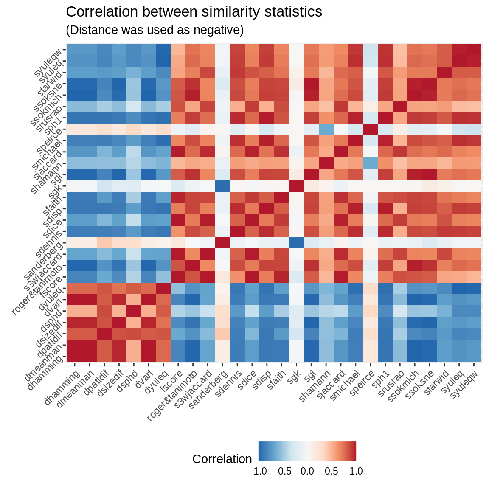
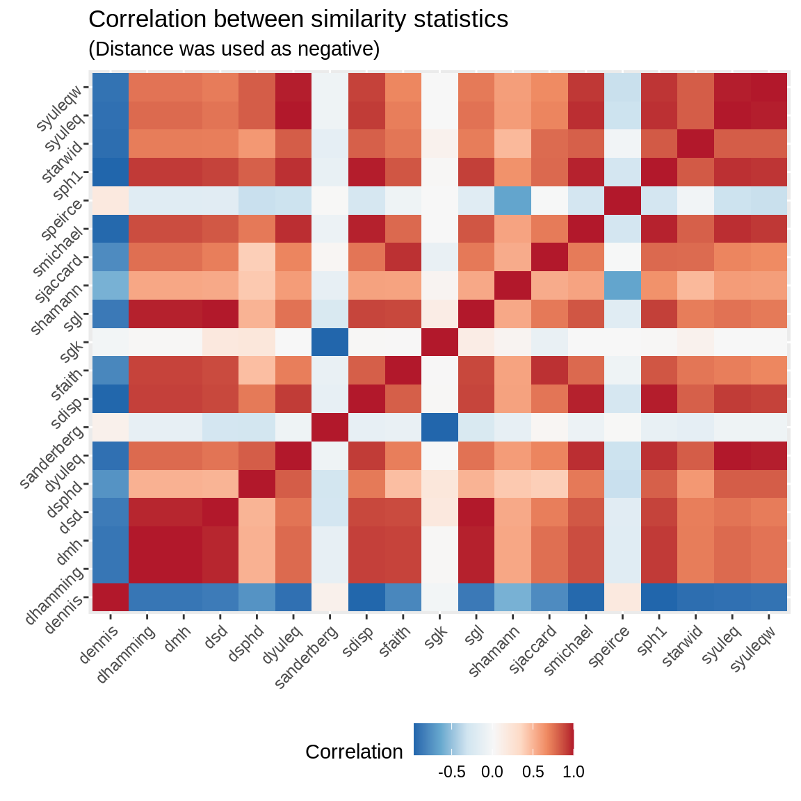
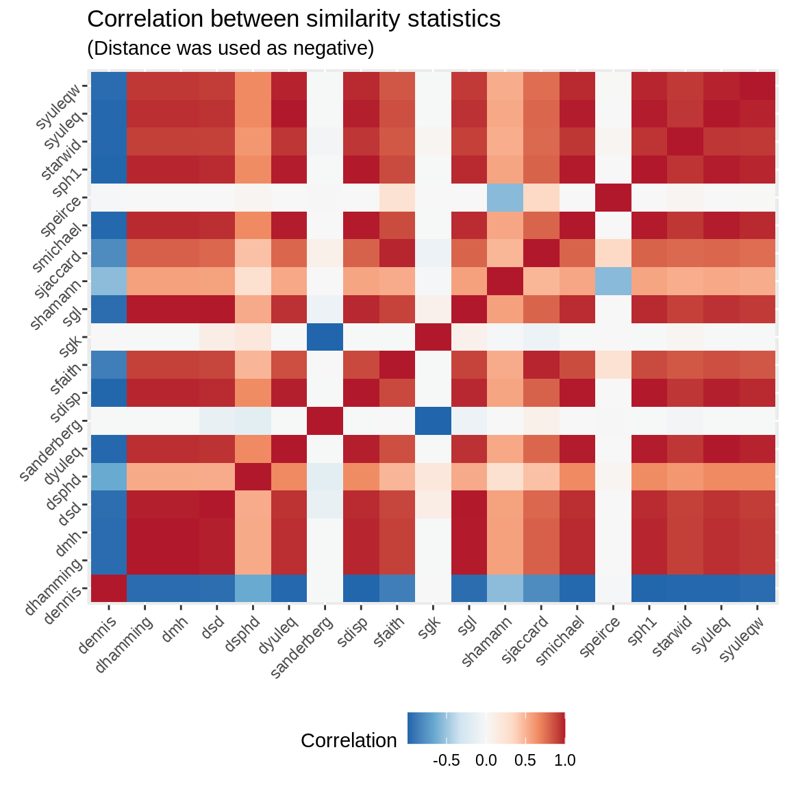

comparing-similarities.Rmd# Computing
all_raw03 <- similarity(powerset03, statistic = unlist(statistics))
all03 <- all_raw03
all03[!is.finite(all03)] <- NA
all_cor03 <- all03
all_cor03[,statistics$distance] <- -all_cor03[,statistics$distance]
all_cor03 <- cor(all_cor03[,-c(1,2)], use = "pairwise.complete.obs")
# knitr::kable(all_cor, digits = 2)res <- cbind(a=rownames(all_cor03), as.data.frame(all_cor03))
res <- lapply(2:ncol(res), function(i) {
data.frame(
a = res[,1],
b = colnames(res)[i],
corr = res[,i],
stringsAsFactors = FALSE
)
}) %>%
do.call("rbind", .)
ggplot(res, aes(x=a, y=b, fill=corr))+
scale_fill_distiller(palette = "RdBu") +
geom_bin2d() +
labs(fill = "Correlation") +
labs(title = "Correlation between similarity statistics") +
labs(subtitle = "(Distance was used as negative)") +
theme(
axis.text = element_text(angle = 45, hjust = 1),
legend.position = "bottom",
axis.title = element_blank()
)
lapply(3:ncol(all03), function(i) {
ans <- data.frame(
Statistic = colnames(all03)[i],
`% Miss` = sum(!is.finite(all03[,i]))/length(all03[,i])*100,
`Variance` = var(all03[,i], na.rm=TRUE),
`Min` = min(all03[,i], na.rm=TRUE),
`Max` = max(all03[,i], na.rm=TRUE),
`p25` = quantile(all03[,i], .25, na.rm=TRUE),
`p75` = quantile(all03[,i], .75, na.rm=TRUE),
check.names = FALSE
)
ans$IQR <- with(ans, p75 - p25)
ans
}) %>%
do.call(rbind, .) %>%
knitr::kable(digits=2)| Statistic | % Miss | Variance | Min | Max | p25 | p75 | IQR | |
|---|---|---|---|---|---|---|---|---|
| similarity1 | sanderberg | 0.00 | 0.04 | 0.00 | 1.00 | 0.00 | 0.17 | 0.17 |
| similarity2 | sdisp | 0.00 | 0.01 | -0.25 | 0.17 | -0.08 | 0.06 | 0.14 |
| similarity3 | sfaith | 0.00 | 0.03 | 0.00 | 0.83 | 0.25 | 0.50 | 0.25 |
| similarity4 | sgk | 9.42 | 1.01 | -3.00 | 0.00 | -0.50 | 0.00 | 0.50 |
| similarity5 | sgl | 0.00 | 0.04 | 0.00 | 0.91 | 0.50 | 0.80 | 0.30 |
| similarity6 | shamann | 0.00 | 0.11 | -1.00 | 1.00 | 0.33 | 0.67 | 0.33 |
| similarity7 | sjaccard | 0.00 | 0.05 | 0.00 | 0.83 | 0.20 | 0.50 | 0.30 |
| similarity8 | smichael | 0.00 | 0.31 | -1.00 | 0.92 | -0.60 | 0.44 | 1.04 |
| similarity9 | speirce | 5.95 | 0.08 | 0.00 | 1.00 | 0.25 | 0.60 | 0.35 |
| similarity10 | sph1 | 6.20 | 0.19 | -1.00 | 0.71 | -0.33 | 0.33 | 0.67 |
| similarity11 | starwid | 3.12 | 0.09 | -1.00 | 0.20 | -0.45 | -0.20 | 0.25 |
| similarity12 | syuleq | 6.20 | 0.65 | -1.00 | 1.00 | -1.00 | 1.00 | 2.00 |
| similarity13 | syuleqw | 6.20 | 0.61 | -1.00 | 1.00 | -1.00 | 1.00 | 2.00 |
| distance1 | dennis | 3.12 | 0.54 | -1.73 | 1.63 | -0.58 | 0.58 | 1.15 |
| distance2 | dhamming | 0.00 | 0.04 | 0.17 | 1.00 | 0.33 | 0.67 | 0.33 |
| distance3 | dmh | 0.00 | 0.04 | 0.17 | 1.00 | 0.33 | 0.67 | 0.33 |
| distance4 | dsd | 0.00 | 0.04 | 0.03 | 1.00 | 0.11 | 0.44 | 0.33 |
| distance5 | dsphd | 0.00 | 0.02 | -0.50 | 0.50 | 0.06 | 0.22 | 0.17 |
| distance6 | dyuleq | 6.20 | 0.65 | 0.00 | 2.00 | 0.00 | 2.00 | 2.00 |
Of all the measurements shown here, only 6 were defined for all cases. In the case of Anderberg, it might not be the best option because of its negatively correlatedness with most of the measures. Both Jaccard and Hamming, even though popular, show very low variances overall compare to Michael and Hamann, which if you care about heterogeneity in the measurements (this could be a key factor in regression analysis) can be important.
# Computing
all_raw04 <- similarity(dat, statistic = unlist(statistics))
all04 <- all_raw04
all04[!is.finite(all04)] <- NA
all_cor04 <- all04
all_cor04[,statistics$distance] <- -all_cor04[,statistics$distance]
all_cor04 <- cor(all_cor04[,-c(1,2)], use = "pairwise.complete.obs")
# knitr::kable(all_cor, digits = 2)res <- cbind(a=rownames(all_cor04), as.data.frame(all_cor03))
res <- lapply(2:ncol(res), function(i) {
data.frame(
a = res[,1],
b = colnames(res)[i],
corr = res[,i],
stringsAsFactors = FALSE
)
}) %>%
do.call("rbind", .)
ggplot(res, aes(x=a, y=b, fill=corr))+
scale_fill_distiller(palette = "RdBu") +
geom_bin2d() +
labs(fill = "Correlation") +
labs(title = "Correlation between similarity statistics") +
labs(subtitle = "(Distance was used as negative)") +
theme(
axis.text = element_text(angle = 45, hjust = 1),
legend.position = "bottom",
axis.title = element_blank()
)
sum_stats04 <- lapply(3:ncol(all04), function(i) {
ans <- data.frame(
Statistic = colnames(all04)[i],
`% Miss` = sum(!is.finite(all04[,i]))/length(all04[,i])*100,
`Variance` = var(all04[,i], na.rm=TRUE),
`Min` = min(all04[,i], na.rm=TRUE),
`Max` = max(all04[,i], na.rm=TRUE),
`p25` = quantile(all04[,i], .25, na.rm=TRUE),
`p75` = quantile(all04[,i], .75, na.rm=TRUE),
check.names = FALSE
)
ans$IQR <- with(ans, p75 - p25)
ans
}) %>%
do.call(rbind, .)
sum_stats04[with(sum_stats04, order(`% Miss`, -Variance)),] %>%
knitr::kable(digits=2)| Statistic | % Miss | Variance | Min | Max | p25 | p75 | IQR | |
|---|---|---|---|---|---|---|---|---|
| distance1 | dennis | 0.00 | 0.81 | -3.00 | 3.67 | -0.55 | 0.55 | 1.10 |
| similarity8 | smichael | 0.00 | 0.22 | -1.00 | 0.98 | -0.32 | 0.32 | 0.65 |
| similarity4 | sgk | 0.00 | 0.10 | -3.00 | 0.00 | -0.33 | 0.00 | 0.33 |
| similarity6 | shamann | 0.00 | 0.06 | -0.83 | 1.00 | 0.33 | 0.67 | 0.33 |
| similarity1 | sanderberg | 0.00 | 0.04 | 0.00 | 1.50 | 0.00 | 0.25 | 0.25 |
| similarity7 | sjaccard | 0.00 | 0.03 | 0.00 | 0.92 | 0.22 | 0.44 | 0.22 |
| distance4 | dsd | 0.00 | 0.02 | 0.01 | 1.00 | 0.17 | 0.34 | 0.17 |
| distance2 | dhamming | 0.00 | 0.02 | 0.08 | 1.00 | 0.42 | 0.58 | 0.17 |
| distance3 | dmh | 0.00 | 0.02 | 0.08 | 1.00 | 0.42 | 0.58 | 0.17 |
| similarity11 | starwid | 0.00 | 0.02 | -1.00 | 0.33 | -0.58 | -0.43 | 0.15 |
| similarity5 | sgl | 0.00 | 0.02 | 0.00 | 0.96 | 0.59 | 0.74 | 0.15 |
| similarity3 | sfaith | 0.00 | 0.01 | 0.00 | 0.92 | 0.29 | 0.46 | 0.17 |
| similarity2 | sdisp | 0.00 | 0.00 | -0.25 | 0.21 | -0.04 | 0.04 | 0.08 |
| distance5 | dsphd | 0.00 | 0.00 | -0.53 | 0.33 | 0.08 | 0.17 | 0.09 |
| similarity9 | speirce | 0.08 | 0.03 | 0.00 | 1.00 | 0.40 | 0.60 | 0.20 |
| similarity12 | syuleq | 0.10 | 0.31 | -1.00 | 1.00 | -0.43 | 0.43 | 0.86 |
| distance6 | dyuleq | 0.10 | 0.31 | 0.00 | 2.00 | 0.57 | 1.43 | 0.86 |
| similarity13 | syuleqw | 0.10 | 0.19 | -1.00 | 1.00 | -0.23 | 0.23 | 0.45 |
| similarity10 | sph1 | 0.10 | 0.09 | -1.00 | 0.85 | -0.19 | 0.19 | 0.38 |
set.seed(71723)
dat <- replicate(2e3, matrix(sample.int(2, 25, TRUE)-1, nrow = 5, ncol = 5), simplify = FALSE)# Computing
all_raw04 <- similarity(dat, statistic = unlist(statistics))
all04 <- all_raw04
all04[!is.finite(all04)] <- NA
all_cor04 <- all04
all_cor04[,statistics$distance] <- -all_cor04[,statistics$distance]
all_cor04 <- cor(all_cor04[,-c(1,2)], use = "pairwise.complete.obs")
# knitr::kable(all_cor, digits = 2)res <- cbind(a=rownames(all_cor04), as.data.frame(all_cor04))
res <- lapply(2:ncol(res), function(i) {
data.frame(
a = res[,1],
b = colnames(res)[i],
corr = res[,i],
stringsAsFactors = FALSE
)
}) %>%
do.call("rbind", .)
ggplot(res, aes(x=a, y=b, fill=corr))+
scale_fill_distiller(palette = "RdBu") +
geom_bin2d() +
labs(fill = "Correlation") +
labs(title = "Correlation between similarity statistics") +
labs(subtitle = "(Distance was used as negative)") +
theme(
axis.text = element_text(angle = 45, hjust = 1),
legend.position = "bottom",
axis.title = element_blank()
)
sum_stats04 <- lapply(3:ncol(all04), function(i) {
ans <- data.frame(
Statistic = colnames(all04)[i],
`% Miss` = sum(!is.finite(all04[,i]))/length(all04[,i])*100,
`Variance` = var(all04[,i], na.rm=TRUE),
`Min` = min(all04[,i], na.rm=TRUE),
`Max` = max(all04[,i], na.rm=TRUE),
`p25` = quantile(all04[,i], .25, na.rm=TRUE),
`p75` = quantile(all04[,i], .75, na.rm=TRUE),
check.names = FALSE
)
ans$IQR <- with(ans, p75 - p25)
ans
}) %>%
do.call(rbind, .)
sum_stats04[with(sum_stats04, order(`% Miss`, -Variance)),] %>%
knitr::kable(digits=2)| Statistic | % Miss | Variance | Min | Max | p25 | p75 | IQR | |
|---|---|---|---|---|---|---|---|---|
| distance1 | dennis | 0 | 1.05 | -4.47 | 5.72 | -0.70 | 0.67 | 1.37 |
| distance6 | dyuleq | 0 | 0.18 | 0.00 | 2.00 | 0.67 | 1.33 | 0.67 |
| similarity12 | syuleq | 0 | 0.18 | -1.00 | 1.00 | -0.33 | 0.33 | 0.67 |
| similarity8 | smichael | 0 | 0.15 | -1.00 | 0.99 | -0.31 | 0.31 | 0.62 |
| similarity13 | syuleqw | 0 | 0.07 | -1.00 | 1.00 | -0.17 | 0.17 | 0.34 |
| similarity10 | sph1 | 0 | 0.05 | -1.00 | 1.00 | -0.17 | 0.17 | 0.33 |
| similarity1 | sanderberg | 0 | 0.04 | 0.00 | 2.00 | 0.00 | 0.20 | 0.20 |
| similarity6 | shamann | 0 | 0.04 | -0.60 | 1.00 | 0.40 | 0.60 | 0.20 |
| similarity4 | sgk | 0 | 0.03 | -2.00 | 0.00 | -0.17 | 0.00 | 0.17 |
| similarity7 | sjaccard | 0 | 0.02 | 0.00 | 1.00 | 0.25 | 0.41 | 0.16 |
| distance4 | dsd | 0 | 0.01 | 0.00 | 1.00 | 0.16 | 0.36 | 0.20 |
| distance2 | dhamming | 0 | 0.01 | 0.00 | 1.00 | 0.40 | 0.60 | 0.20 |
| distance3 | dmh | 0 | 0.01 | 0.00 | 1.00 | 0.40 | 0.60 | 0.20 |
| similarity5 | sgl | 0 | 0.01 | 0.00 | 1.00 | 0.57 | 0.75 | 0.18 |
| similarity3 | sfaith | 0 | 0.01 | 0.00 | 0.82 | 0.30 | 0.42 | 0.12 |
| similarity11 | starwid | 0 | 0.01 | -1.00 | -0.03 | -0.66 | -0.56 | 0.10 |
| similarity2 | sdisp | 0 | 0.00 | -0.25 | 0.25 | -0.04 | 0.04 | 0.08 |
| distance5 | dsphd | 0 | 0.00 | -0.35 | 0.25 | 0.08 | 0.12 | 0.04 |
| similarity9 | speirce | 0 | 0.02 | 0.00 | 1.00 | 0.42 | 0.58 | 0.16 |